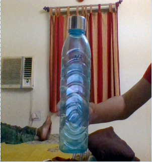
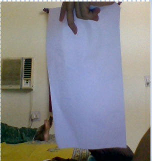
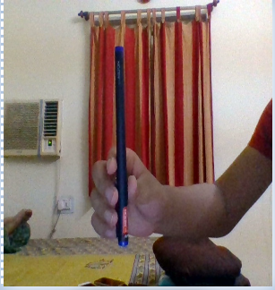

Water Bottle - 
Output on Google Lens -
Bottle
Output on MobileNet Model -
Water Bottle
Result -
MobileNet Model is more accurate
Paper - 
Output on Google lens -
Person
Output on MobileNet Model -
Punching Bag
Result -
None of them is accurate
Pen - 
Output on Google Lens -
Wall
Output on MobileNet Model -
Guillotine
Result -
None of them is accurate